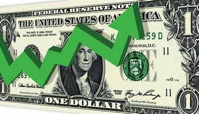

Dólar teve um aumento exorbitante!
O dólar está em alta, com valores em R$ 5,86. Os principais fatores que influenciam a alta da moeda americana incluem a política monetária dos Estados Unidos, a influência do mercado financeiro global e as mudanças na economia interna. A elevação da moeda norte-americana é motivada por dois fatores: a incerteza fiscal e a política monetária restritiva dos EUA.

Veja como o aumento do dólar pode afetar o Brasil:
-O aumento do dólar afetou o Brasil de várias maneiras:
-Viagens mais caras: O encarecimento das viagens ao exterior é um dos principais sinais perceptíveis da alta do dólar.
-Produtos mais caros no Brasil: O encarecimento dos produtos nas lojas e supermercados no Brasil é outro efeito relacionado ao aumento da cotação do câmbio.
-Inflação e juros: A alta do dólar influencia a inflação e os juros.
-Matérias-primas: Insumos importados, como o trigo, sofrem reajustes com a alta do dólar.